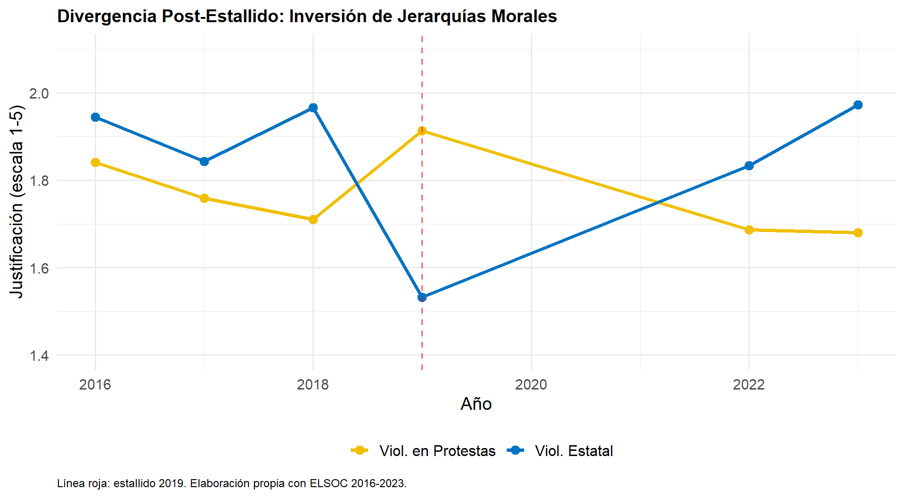
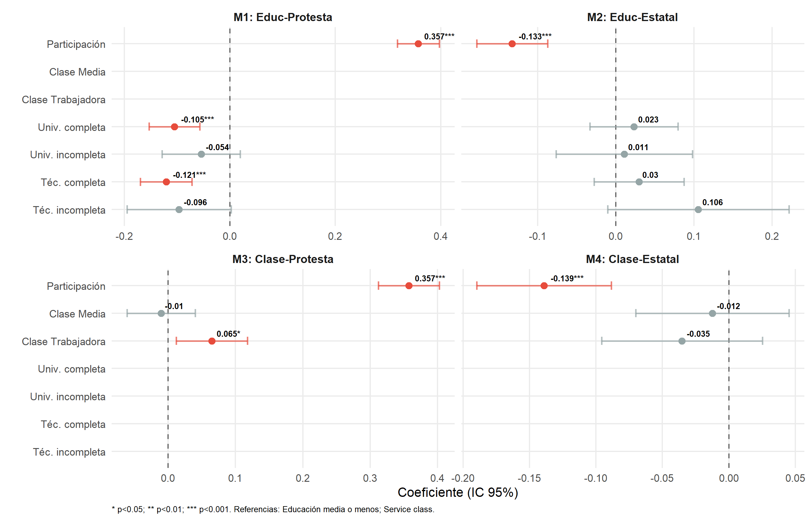
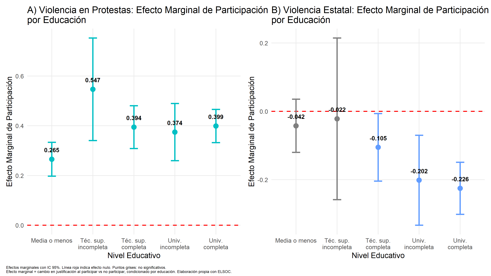
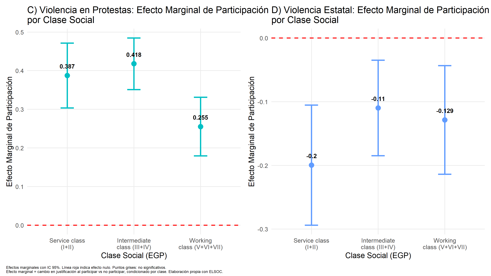
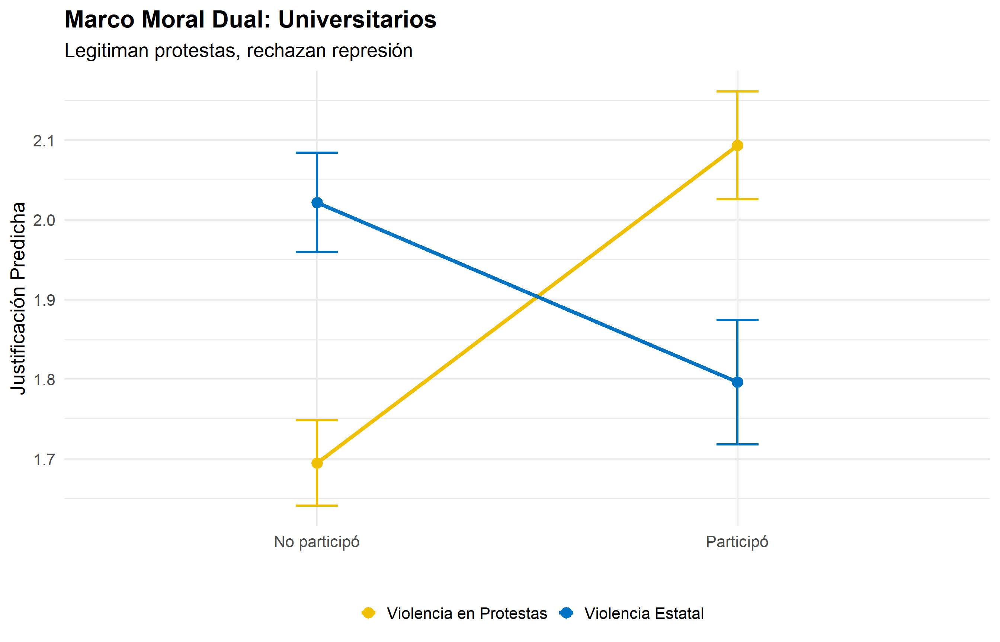
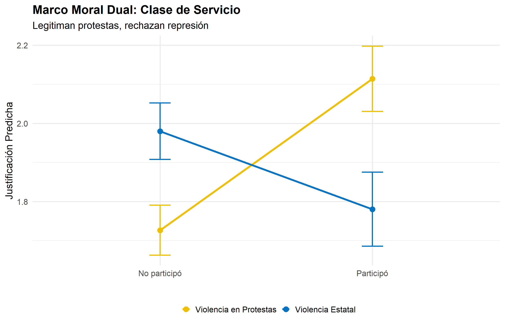

René Canales Sellés1 2
1Instituto de Sociología, Pontificia Universidad Católica de Chile
2Fondecyt Actitudes y comportamiento político juvenil: desigualdad, estilos de socialización escolar e influencias intergeneracionales
Defensa de título para optar al grado de Magíster en Sociología
Comisión: Prof. Nicolás Somma, Prof. Matías Bargsted y Prof. Andrés Biehl
19 de enero 2026, Chile
Lo que comenzó como una protesta estudiantil esporádica se transformó en el ciclo de movilización más intenso desde el retorno a la democracia (Somma et al., 2021)
Protestas multitudinarias con repertorios diversos, niveles de confrontación pocas veces vistos y un ciclo de violencia política altamente impactante (Cox et al., 2024; Somma, 2021; Pleyers, 2023)
Esto instaló una pregunta central en el debate académico y público: ¿cuando y para quién la violencia política resulta legítima?
Evidencia reciente (González y Le Foulon, 2020) sugiere que la justificación no fue homogénea.
Este patrón contradice la literatura clásica que asocia educación con mayor apego a normas democráticas y rechazo a la violencia política (Lipset, 1959; Nie et al., 1996)
Asume que los efectos de la educación y la clase social son lineales, estables y universales
En otras palabras, no sonsidera que estos efectos pueden ser condicionales al contexto
¿Cómo interactúan la educación, la clase social y la participación en protestas para moldear las actitudes hacia la violencia política en el contexto contencioso chileno?
La sofisticación cognitiva no conduce necesariamente a la moderación, sino a justificaciones más elaboradas y contextualizadas
En este marco:
Esto se conceptualiza como el efecto techo (Elsässer & Schäfer, 2023)
Retomando la pregunta: ¿Cómo interactúan la educación, la clase social y la participación en protestas para moldear las actitudes hacia la violencia política en el contexto contencioso chileno?
Los efectos de la educación y la clase social sobre la justificación de la violencia no son directos ni universales, sino condicionales a la experiencia de participación
H1: La participación en protestas crea las condiciones específicas para la sofisticación cognitiva que lleva a legitimar la violencia
\(H_{1a}\): Entre individuos que no participan en protestas, mayor nivel educativo está asociado con menor justificación de violencia en manifestaciones
\(H_{1b}\): Entre individuos que sí participan en protestas, el efecto se invierte: universitarios muestran mayor justificación de violencia comparado con individuos de menor educación
H2: La clase opera como un moderador estructural del vínculo entre participación y actitudes hacia la violencia política
\(H_{2a}\): La clase trabajadora presenta una mayor justificación basal de la violencia política que la clase de servicio, independientemente de su nivel de participación
\(H_{2b}\): El incremento en la justificación de la violencia asociado a la participación es menor para la clase trabajadora que para la clase de servicio
Para Universitarios
\(H_{3a}\): Universitarios participantes muestran mayor justificación de violencia por manifestantes vs universitarios no participantes
\(H_{3b}\): Los mismos universitarios participantes muestran menor justificación de violencia estatal vs universitarios no participantes
Para la Clase de Servicios
\(H_{3c}\): Clase de servicio participante muestra mayor justificación de violencia por manifestantes vs no participantes de la misma clase
\(H_{3d}\): La misma clase de servicio participante muestra menor justificación de violencia estatal vs no participantes
Marco moral dual
Las hipótesis H3 capturan una reconfiguración normativa bidireccional:
Solo entre sectores educados/privilegiados que participan
Muestra analítica:
Escala continua 1 (Nunca se Justifica) a 5 (Siempre se justifica)
Violencia en Protestas
Promedio de 2 ítems:
Violencia Estatal
Promedio de 2 ítems:
Educación (Categórica): Media o menos (referencia); Técnica superior incompleta/completa; Universitaria incompleta/completa
Clase Social (EGP): Working class (V–VII, trabajadores manuales); Intermediate class (III–IV, empleados no manuales); Service class (I–II, profesionales y gerentes, referencia)
Participación en protestas: Variable dicotómica (Participó de alguna protesta en los últimos 12 meses): 1 = Sí | 0 = No
Controles: Edad (centrada en media), Género (1=Mujer), Ideología política (0-10, estandarizada), Tiempo (ola 2016-2023)
Modelos multinivel de efectos mixtos:
Especificaciones:
\[ y_{tj} = \beta_{0j} + \beta_{1j} X_{tj} + \varepsilon_{tj} \tag{1}\]
\[ y_{tj} = \gamma_{00} + \gamma_{01} Z_j + \gamma_{10} X_{tj} + \gamma_{20} t + u_{0j} + \varepsilon_{tj} \tag{2}\]

Violencia Protestas
|
Violencia Estatal
|
|||||||
|---|---|---|---|---|---|---|---|---|
No Participa
|
Participa
|
No Participa
|
Participa
|
|||||
| Educación | Pre-2019 | Post-2019 | Pre-2019 | Post-2019 | Pre-2019 | Post-2019 | Pre-2019 | Post-2019 |
| Media completa o menos | 1.74 | 1.64 | 2.13 | 1.99 | 1.93 | 1.94 | 2.02 | 1.63 |
| Téc. sup.incompleta | 1.73 | 1.61 | 2.30 | 2.07 | 1.98 | 2.02 | 2.32 | 1.70 |
| Téc. sup.completa | 1.65 | 1.57 | 2.05 | 2.05 | 1.96 | 1.93 | 1.86 | 1.55 |
| Univ. incompleta | 1.79 | 1.70 | 2.14 | 1.96 | 1.96 | 1.88 | 1.74 | 1.41 |
| Univ. completa | 1.64 | 1.65 | 2.10 | 2.21 | 1.99 | 1.99 | 1.58 | 1.50 |
Violencia Protestas
|
Violencia Estatal
|
|||||||
|---|---|---|---|---|---|---|---|---|
No Participa
|
Participa
|
No Participa
|
Participa
|
|||||
| Clase Social | Pre-2019 | Post-2019 | Pre-2019 | Post-2019 | Pre-2019 | Post-2019 | Pre-2019 | Post-2019 |
| Service class (I+II) | 1.64 | 1.66 | 2.03 | 2.19 | 1.99 | 1.93 | 1.65 | 1.48 |
| Intermediate class (III+IV) | 1.66 | 1.58 | 2.16 | 2.02 | 1.94 | 1.89 | 1.82 | 1.61 |
| Working class (V+VI+VII) | 1.79 | 1.72 | 2.07 | 2.12 | 1.90 | 1.94 | 1.82 | 1.54 |





Los resultados matizan el efecto civilizatorio (Lipset, 1959; Nie et al., 1996): a mayor educación, menor grado de justificación de la violencia (H1a).
Pero este efecto se debilita cuando la persona participa de protestas. Neutraliza el efecto inhibidor de la educación (H1b se aprueba de manera parcial)
La educación actúa como un recurso para re-moralizar el conflicto situacional, desafiando las concepciones lineales clásicas de la sociología política (Lipset, 2959; Nie et al., 1996).
La protesta sería una especie de laboratorio moral que transforma las disposiciones previas del individuo (Passy & Monsch, 2019).
Clase trabajadora presenta justificación basal mayor de la violencia política, consistente con procesos de habituación derivados de la exposición cotidiana a la violencia estructural (Beeghley, 1986; Bottero, 2004; Olin Wright, 2005). Consistente con H2a.
La interacción entre clase social y participación revela que la desigualdad distribuye márgenes de transformación actitudinal. Este patrón de habituación estructural permite confirmar la Hipótesis H2b.
El hallazgo más llamativo la convergencia de clase el dentro de la movilización: la participación actúa como un ecualizador entre clases frente a la justificación de la violencia de diferente tipo (H3c y H3d)
Sucede una deslegitimación selectiva donde la violencia propia se justifica como respuesta táctica ante una injusticia procedimental percibida (Gerber et al., 2023).
Este hallazgo permite validar simultáneamente las hipótesis H3a, H3b, H3c y H3d.
La violencia en 2019 no fue un síntoma de “marginalidad”, sino un producto de la politización del malestar entre los sectores más educados del país.
Esta tesis realiza tres contribuciones principales:
Evidencia longitudinal: Fortalece la plausibilidad causal de la participación como motor de transformación moral en contextos de alta conflictividad.
Exploración del efecto techo en contextos contenciosos: Desigualdad estructural también repercute en las actitudes políticas.
Distribución selectiva de la legitimidad de la violencia: Desafía la interpretación de que hay aceptación o rechazo indiferenciado de la violencia política
El uso de medidas autoreportadas puede implicar sesgos de deseabildiad social. Profundidad cualitativa puede ser útil para este tipo de estudios.
No captura la dimensión situacional inmediata de la interacción con la protesta. Profundizar en diseños causales (Disi Pavlic et al., 2025)
La operacionalización de la educación no permite distinguir entre trayectorias educativas diferenciadas: La socialización política difiere.
Página del proyecto: https://github.com/renejcanales/protest_effects
Almond, G. A., y Verba, S. (1963). The civic culture: Political attitudes and democracy in five nations. Princeton University Press.
Beeghley, L. (1986). Social stratification in America: A critical analysis of institutional inequality. State University of New York Press.
Bottero, W. (2004). Stratification: Social division and inequality. Routledge.
Disi Pavlic, R., et al. (2025). Long-term attitudinal consequences of the 2019 Chilean outburst: A panel data analysis. (Working Paper/Forthcoming).
Donoso, S., & Somma, N. M. (2019). Student movements in Chile: Between the street and the parliament. Oxford University Press.
Gerber, M. M., et al. (2023). Procedural justice and police legitimacy during the Chilean social uprising. (Journal article reference).
Gonzalez, R., & Morán, C. L. F. (2020). The 2019–2020 Chilean protests: A first look at their causes and participants. International Journal of Sociology, 50(3), 227–235. https://doi.org/10.1080/00207659.2020.1752499
Jost, J. T., Glaser, J., Kruglanski, A. W., & Sulloway, F. J. (2003). Political conservatism as motivated social cognition. Psychological Bulletin, 129(3), 339–375.
Lindh, A., & McCall, L. (2020). Class position and political attitudes: A ceiling effect? European Sociological Review.
Lipset, S. M. (1959). Political man: The social bases of politics. Doubleday.
McAdam, D. (1989). The biographical consequences of activism. American Sociological Review, 54(5), 744–760.
Nie, N. H., Junn, J., & Stehlik-Barry, K. (1996). Education and democratic citizenship in America. University of Chicago Press.
Olin Wright, E. (2005). Approaches to class analysis. Cambridge University Press.
Passy, F., & Monsch, G.-A. (2019). Contentious politics and social change. Palgrave Macmillan.
Snow, D. A., & Benford, R. D. (1988). Ideology, resonance, and participant mobilization. International Social Movement Research, 1(1), 197–217.
Tetlock, P. E. (1986). A value pluralism model of ideological reasoning. Journal of Personality and Social Psychology, 50(4), 819–827.
Tyler, T. R. (2006). Why people obey the law. Princeton University Press.
Varlik, S., et al. (2025). Structural violence and normative orientations in unequal societies.